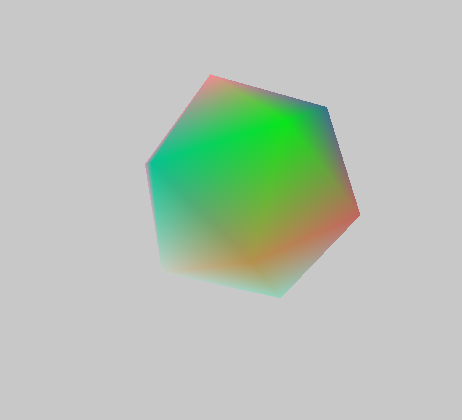
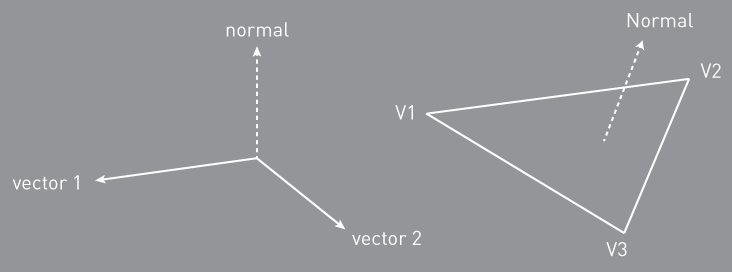

ofVbo

First things first: a Vertex Buffer Object (VBO) provides a way for you to create vertices, normals, colors, and texture coordinates on the graphics card for non-immediate mode rendering. This means that you can store it all on the graphics card and then access, update, or draw it, whenever you need. This is pretty convenient when you have something that you want to draw multiple times without changing it much, because it means that, instead of needing to upload new data each time, you can simply draw it without needing to recreate all your vertices and colors, a philosophy which is probably familiar to you from working with the ofFbo or ofTexture.
There are a few things that are important to understand about VBOs:
Each property of the VBO - vertices, texCoords, normals, colors - can be either dynamic or static. You set it to static when you know that you won't be updating it later on. You set it to dynamic when you know you will be updating it later on.
Just like with ofMesh, you need to keep track of the vertices and their indices in order to make shapes and you can draw a VBO in any one of the OpenGL drawing modes, GL_LINE_STRIP, GL_POINTS, GL_QUADS, GL_TRIANGLES and GL_TRIANGLE_STRIP.
Vertices are passed to your graphics card and your graphics card fills in the spaces in between them in a process usually called the rendering pipeline. The rendering pipeline goes more or less like this:
-
Say how you're going to connect all the points.
-
Make some points.
-
Say that you're done making points.
You may be thinking: Ill just make eight vertices and voila: a cube. Not so quick. Theres a hitch and that hitch is that the OpenGL renderer has different ways of connecting the vertices that you pass to it and none are as efficient as to only need eight vertices to create a cube. You've probably seen a version of the following image somewhere before.

Generally, you have to create your points to fit the drawing mode that you've selected because of whats called winding. A vertex gets connected to another vertex in the order that the mode does its winding and this means that you might need multiple vertices in a given location to create the shape you want. The cube, for example, requires eighteen vertices, not the eight that you would expect. If you note the order of vertices in the GL chart above you'll see that all of them use their vertices slightly differently (in particular you should make note of the GL_TRIANGLE_STRIP example). Drawing a shape requires that you keep track of which drawing mode is being used and which order your vertices are declared in. If you're thinking it would be nice if there were an abstraction layer for this, you're thinking right. Enter the mesh, which is really just an abstraction of the vertex and drawing mode that we started with but which has the added bonus of managing the draw order for you. That may seem insignificant at first, but it provides some real benefits when working with complex geometry.
The following example shows an ofVbo representing an icosahedron:
const ofIndexType Faces[] = {
2, 1, 0,
3, 2, 0,
4, 3, 0,
5, 4, 0,
1, 5, 0,
11, 6, 7,
11, 7, 8,
11, 8, 9,
11, 9, 10,
11, 10, 6,
1, 2, 6,
2, 3, 7,
3, 4, 8,
4, 5, 9,
5, 1, 10,
2, 7, 6,
3, 8, 7,
4, 9, 8,
5, 10, 9,
1, 6, 10 };
const float Verts[] = {
0.000f, 0.000f, 1.000f,
0.894f, 0.000f, 0.447f,
0.276f, 0.851f, 0.447f,
-0.724f, 0.526f, 0.447f,
-0.724f, -0.526f, 0.447f,
0.276f, -0.851f, 0.447f,
0.724f, 0.526f, -0.447f,
-0.276f, 0.851f, -0.447f,
-0.894f, 0.000f, -0.447f,
-0.276f, -0.851f, -0.447f,
0.724f, -0.526f, -0.447f,
0.000f, 0.000f, -1.000f };
<a href="../math/ofVec3f.html" class="docs_class" >ofVec3f</a> v[12];
<a href="../math/ofVec3f.html" class="docs_class" >ofVec3f</a> n[12];
ofFloatColor c[12];
<a href="../gl/ofVbo.html" class="docs_class" >ofVbo</a> vbo;
void HelloWorldApp::setup()
{
int i, j = 0;
for ( i = 0; i < 12; i++ )
{
c[i].r = ofRandom(1.0);
c[i].g = ofRandom(1.0);
c[i].b = ofRandom(1.0);
v[i][0] = Verts[j] * 100.f;
j++;
v[i][1] = Verts[j] * 100.f;
j++;
v[i][2] = Verts[j] * 100.f;
j++;
}
vbo.setVertexData( &v[0], 12, GL_STATIC_DRAW );
vbo.setColorData( &c[0], 12, GL_STATIC_DRAW );
vbo.setIndexData( &Faces[0], 60, GL_STATIC_DRAW );
glEnable(GL_DEPTH_TEST);
}
void HelloWorldApp::draw(){
ofTranslate(ofGetWidth()/2, ofGetHeight()/2, 100);
ofRotate(ofGetElapsedTimef() * 20.0, 1, 1, 0);
glPointSize(10.f);
vbo.drawElements( GL_TRIANGLES, 60);
}

You'll notice in a lot of the methods that a usage is required, for instance, setNormals(). The possible options are: GL_STREAM_DRAW, GL_STREAM_READ, GL_STREAM_COPY, GL_STATIC_DRAW, GL_STATIC_READ, GL_STATIC_COPY, GL_DYNAMIC_DRAW, GL_DYNAMIC_READ, or GL_DYNAMIC_COPY Each of these affects the speed of operations that you perform with the VBO and whether it's certain operations are allowed. For instance, if the vertices are STATIC, then they cannot be changed after they been loaded the first time, whereas if they're DYNAMIC, then they can be modified at any time later. The different modes can be broken down like so:
STREAM The data store contents will be modified once and used at most a few times.
STATIC The data store contents will be modified once and used many times.
DYNAMIC The data store contents will be modified repeatedly and used many times.
The nature of access may be one of these:
DRAW The data store contents are modified by the application, and used as the source for GL drawing and image specification commands.
READ The data store contents are modified by reading data from the GL, and used to return that data when queried by the application.
COPY The data store contents are modified by reading data from the GL, and used as the source for GL drawing and image specification commands.
ofVbo()
ofVbo::ofVbo()
Simple constructor for the ofVbo. When the ofVbo is first created there are no vertices or normals within it.
ofVbo(...)
ofVbo::ofVbo(const ofVbo &mom)
This is the copy constructor, so that you can do the following:
ofVbo v1;
// filll v1;
ofVbo v2(v1); // v2 now contains all of v1s properties in a separate VBO
~ofVbo()
ofVbo::~ofVbo()
This is the destructor for the ofVbo, it clears all the vertices, texture coordinates, and normals from the graphics card.
bind()
void ofVbo::bind()
This is for advanced users who might want to use ways of drawing other than draw() or drawElements(), it simply binds all the arrays for the VBO.
clear()
void ofVbo::clear()
This erases your VBO data from your graphics card, but not the VBO itself, so you can fill it with data again.
draw(...)
void ofVbo::draw(int drawMode, int first, int total)
This method allows you to draw your VBO but unlike drawElements() ignores any indices that you might have set up. This is an important distinction between the two methods. mode Specifies what kind of primitives to render. Symbolic constants GL_POINTS, GL_LINE_STRIP, GL_LINE_LOOP, GL_LINES, GL_TRIANGLE_STRIP, GL_TRIANGLE_FAN, GL_TRIANGLES, GL_QUAD_STRIP, GL_QUADS, and GL_POLYGON are accepted. first Specifies the starting index in the enabled arrays. total Specifies the number of indices to be rendered. This last part is pretty important: if you have more indices than vertices you'll want to make sure that you pass the number of indices, not the number of vertices.
drawElements(...)
void ofVbo::drawElements(int drawMode, int amt, int offsetelements=0)
drawElements allows you use indices, unlike draw() which ignores them. drawMode Specifies what kind of primitives to render. Symbolic constants GL_POINTS, GL_LINE_STRIP, GL_LINE_LOOP, GL_LINES, GL_TRIANGLE_STRIP, GL_TRIANGLE_FAN, GL_TRIANGLES, GL_QUAD_STRIP, GL_QUADS, and GL_POLYGON are accepted.
vbo.drawElements( GL_TRIANGLES, 60);
amt specifies the number of indices to be rendered. This last part is pretty important: if you have more indices than vertices you'll want to make sure that you pass the number of indices, not the number of vertices.
getAttributeId(...)
GLuint ofVbo::getAttributeId(int AttrPos_)
Documentation from code comments
returns OpenGL memory object id for GL buffer holding attribute data
getIsAllocated()
bool ofVbo::getIsAllocated()
Returns whether the ofVbo has been allocated or not. This is important to check before you start drawing or manipulating the vbo.
getUsingColors()
bool ofVbo::getUsingColors()
Returns whether the vertices within the VBO have colors associated with them or not.
getUsingIndices()
bool ofVbo::getUsingIndices()
Returns whether the VBO has assigned indices or not.
getUsingNormals()
bool ofVbo::getUsingNormals()
Returns whether the surfaces of the VBO have normals associated with them or not.
getUsingTexCoords()
bool ofVbo::getUsingTexCoords()
Returns whether the vertices of the VBO have texture coordinates associated with them or not.
getUsingVerts()
bool ofVbo::getUsingVerts()
Returns whether the ofVbo is using vertices or not. A VBO can exist without vertices, though it's quite unusual.
operator=(...)
ofVbo & ofVbo::operator=(const ofVbo &mom)
This is the equals operator, so that you can do the following:
ofVbo v1;
// filll v1;
ofVbo v2 = v1; // v2 now contains all of v1s properties in a separate VBO
setAttributeBuffer(...)
void ofVbo::setAttributeBuffer(int location, ofBufferObject &buffer, int numCoords, int stride, int offset=0)
setAttributeData(...)
void ofVbo::setAttributeData(int location, const float *vert0x, int numCoords, int total, int usage, int stride=0)
setAttributeDivisor(...)
void ofVbo::setAttributeDivisor(int location, int divisor)
Documentation from code comments
used to send an attribute per instance(s) instead of per vertex. will send per vertex if set to 0 or to the number of instances if >0
see textureBufferInstancedExample and https://www.opengl.org/sdk/docs/man4/html/glVertexAttribDivisor.xhtml
setColorData(...)
void ofVbo::setColorData(const float *color0r, int total, int usage, int stride=0)
This sets the color data for the ofVbo from a pointer to an array of floats. The colors are RGB and are floats from 0.f - 1.f
The possible options for usage are: GL_STREAM_DRAW, GL_STREAM_READ, GL_STREAM_COPY, GL_STATIC_DRAW, GL_STATIC_READ, GL_STATIC_COPY, GL_DYNAMIC_DRAW, GL_DYNAMIC_READ, or GL_DYNAMIC_COPY
setColorData(...)
void ofVbo::setColorData(const ofFloatColor *colors, int total, int usage)
This allows you to set the colors for a vertex using an array of ofFloatColor instances.
ofFloatColor c[12];
// fill in the colors and vertices
vbo.setColorData( &c[0], 12, GL_STATIC_DRAW );
The possible options for usage are: GL_STREAM_DRAW, GL_STREAM_READ, GL_STREAM_COPY, GL_STATIC_DRAW, GL_STATIC_READ, GL_STATIC_COPY, GL_DYNAMIC_DRAW, GL_DYNAMIC_READ, or GL_DYNAMIC_COPY
setIndexData(...)
void ofVbo::setIndexData(const ofIndexType *indices, int total, int usage)
This sets the index data for the VBO from a pointer to an array of ints. Each int represents the index of a vertex, and when the vbo is drawn the indices are used to generate the geometry from the indices.
The possible options for usage are: GL_STREAM_DRAW, GL_STREAM_READ, GL_STREAM_COPY, GL_STATIC_DRAW, GL_STATIC_READ, GL_STATIC_COPY, GL_DYNAMIC_DRAW, GL_DYNAMIC_READ, or GL_DYNAMIC_COPY
setMesh(...)
void ofVbo::setMesh(const ofMesh &mesh, int usage)
This allows you to pass a mesh to the ofVbo and populate the vertices, texture coordinates, and other properties of the VBO from the ofMesh instance. You can think of this as essentially moving geometry data from the CPU to the GPU.
ofxAssimpModelLoader model;
model.loadModel("astroBoy_walk.dae",true);
ofMesh mesh = model.getMesh(0);
ofVbo vbo;
vbo.setMesh(mesh, GL_STATIC_DRAW);
The possible options for usage are: GL_STREAM_DRAW, GL_STREAM_READ, GL_STREAM_COPY, GL_STATIC_DRAW, GL_STATIC_READ, GL_STATIC_COPY, GL_DYNAMIC_DRAW, GL_DYNAMIC_READ, or GL_DYNAMIC_COPY
setMesh(...)
void ofVbo::setMesh(const ofMesh &mesh, int usage, bool useColors, bool useTextures, bool useNormals)
setNormalData(...)
void ofVbo::setNormalData(const float *normal0x, int total, int usage, int stride=0)
This sets the normals data for the ofVbo from a pointer to an array of floats, x,y,z, for each face, so a 3D cube would require an array of 18 floats, 3 for each face.
The possible options for usage are: GL_STREAM_DRAW, GL_STREAM_READ, GL_STREAM_COPY, GL_STATIC_DRAW, GL_STATIC_READ, GL_STATIC_COPY, GL_DYNAMIC_DRAW, GL_DYNAMIC_READ, or GL_DYNAMIC_COPY
setNormalData(...)
void ofVbo::setNormalData(const ofVec3f *normals, int total, int usage)
This sets the normal data for the VBO from a pointer to an array of ofVec3f instances. The normals are calculated as the vector perpendicular to a face. The mathematical definition of a normal is shown on the left, while the way that a normal is calculated for a triangle is shown on the right.

One technique for calculating normals is something like the following:
int* indices;
ofVec3f* verts;
ofVec3f* normals;
// allocate and create normals, indices, and verts
for ( int i = 0, int j = 0; i < NUM_INDICES; i+=3, j++) {
ofVec3f v[3] = { vertices[i], verts[(i+1)], verts[(i+2)] };
ofVec3f temp1 = v[1] - v[0];
ofVec3f temp2 = v[2] - v[0];
ofVec3f norm = temp1.getCrossed(temp2);
for (int j = 0; j < 3; ++j) {
Vector3 a = v[(i+1) % 3] - v[j];
Vector3 b = v[(j+2) % 3] - v[j];
float weight = acos(a.dot(b) / (a.length() * b.length()));
norm += weight * normal;
}
normals[j] = norm;
}
The possible options for usage are: GL_STREAM_DRAW, GL_STREAM_READ, GL_STREAM_COPY, GL_STATIC_DRAW, GL_STATIC_READ, GL_STATIC_COPY, GL_DYNAMIC_DRAW, GL_DYNAMIC_READ, or GL_DYNAMIC_COPY
setTexCoordBuffer(...)
void ofVbo::setTexCoordBuffer(ofBufferObject &buffer, int stride, int offset=0)
setTexCoordData(...)
void ofVbo::setTexCoordData(const float *texCoord0x, int total, int usage, int stride=0)
This sets the texCoord data for the ofVbo from a pointer to an array of floats, ST, for each face, so a 3D cube would require an array of 16 floats, 2 for each vertex.
The possible options for usage are: GL_STREAM_DRAW, GL_STREAM_READ, GL_STREAM_COPY, GL_STATIC_DRAW, GL_STATIC_READ, GL_STATIC_COPY, GL_DYNAMIC_DRAW, GL_DYNAMIC_READ, or GL_DYNAMIC_COPY
setTexCoordData(...)
void ofVbo::setTexCoordData(const ofVec2f *texCoords, int total, int usage)
This sets the texture coordinate data for the VBO from a pointer to an array of ofVec2f instances. Each ofVec2f represents the texture coordinate of a vertex. By default OF uses ARB coords, so you can use pixel coordinates rather than normalized UV coordinates.
The possible options for usage are: GL_STREAM_DRAW, GL_STREAM_READ, GL_STREAM_COPY, GL_STATIC_DRAW, GL_STATIC_READ, GL_STATIC_COPY, GL_DYNAMIC_DRAW, GL_DYNAMIC_READ, or GL_DYNAMIC_COPY
setVertexBuffer(...)
void ofVbo::setVertexBuffer(ofBufferObject &buffer, int numCoords, int stride, int offset=0)
setVertexData(...)
void ofVbo::setVertexData(const float *vert0x, int numCoords, int total, int usage, int stride=0)
This sets the vertex data for the ofVbo from a pointer to an array of floats. The numCoords determines whether you're creating a 3D or 2D vbo, i.e. a 3D cube would require an array of 24 floats, and numCoords to be 8.
The possible options for usage are: GL_STREAM_DRAW, GL_STREAM_READ, GL_STREAM_COPY, GL_STATIC_DRAW, GL_STATIC_READ, GL_STATIC_COPY, GL_DYNAMIC_DRAW, GL_DYNAMIC_READ, or GL_DYNAMIC_COPY
setVertexData(...)
void ofVbo::setVertexData(const ofVec2f *verts, int total, int usage)
This sets the vertex data for the ofVbo from a pointer to an array of ofVec2f instances. This creates a 2D vbo.
The possible options for usage are: GL_STREAM_DRAW, GL_STREAM_READ, GL_STREAM_COPY, GL_STATIC_DRAW, GL_STATIC_READ, GL_STATIC_COPY, GL_DYNAMIC_DRAW, GL_DYNAMIC_READ, or GL_DYNAMIC_COPY
setVertexData(...)
void ofVbo::setVertexData(const ofVec3f *verts, int total, int usage)
This sets the vertex data for the ofVbo from a pointer to an array of ofVec3f instances. This creates a 3D vbo.
The possible options for usage are: GL_STREAM_DRAW, GL_STREAM_READ, GL_STREAM_COPY, GL_STATIC_DRAW, GL_STATIC_READ, GL_STATIC_COPY, GL_DYNAMIC_DRAW, GL_DYNAMIC_READ, or GL_DYNAMIC_COPY
unbind()
void ofVbo::unbind()
This is for advanced users who might want to use ways of drawing other than draw() or drawElements(), it simply unbinds all the arrays for the VBO.
updateAttributeData(...)
void ofVbo::updateAttributeData(int location, const float *vert0x, int total)
updateColorData(...)
void ofVbo::updateColorData(const float *color0r, int total)
If the vertex colors of the VBO have been declared as GL_DYNAMIC_DRAW, then you can update the colors at any time using an array of floats.
updateColorData(...)
void ofVbo::updateColorData(const ofFloatColor *colors, int total)
If the color data for each vertex of the VBO have been declared as GL_DYNAMIC_DRAW, then you can update the vertex colors at any time.
updateIndexData(...)
void ofVbo::updateIndexData(const ofIndexType *indices, int total)
If the indices of the VBO have been declared as GL_DYNAMIC_DRAW, then you can update the indices at any time.
updateMesh(...)
void ofVbo::updateMesh(const ofMesh &mesh)
Updates all the data within the VBO from the data in the ofMesh.
updateNormalData(...)
void ofVbo::updateNormalData(const float *normal0x, int total)
If the normals of the VBO have been declared as GL_DYNAMIC_DRAW, then you can update the normal data at any time using an array of floats.
updateNormalData(...)
void ofVbo::updateNormalData(const ofVec3f *normals, int total)
If the normals of the VBO have been declared as GL_DYNAMIC_DRAW, then you can update the normals at any time.
updateTexCoordData(...)
void ofVbo::updateTexCoordData(const float *texCoord0x, int total)
If the texture coords of the VBO have been declared as GL_DYNAMIC_DRAW, then you can update the tex coords at any time using an array of floats.
updateTexCoordData(...)
void ofVbo::updateTexCoordData(const ofVec2f *texCoords, int total)
If the texture coordinates of the VBO have been declared as GL_DYNAMIC_DRAW, then you can update the texcoords at any time.
updateVertexData(...)
void ofVbo::updateVertexData(const float *ver0x, int total)
If the vertices of the VBO have been declared as GL_DYNAMIC_DRAW, then you can update the indices at any time using an array of floats.
updateVertexData(...)
void ofVbo::updateVertexData(const ofVec2f *verts, int total)
If the vertices of the VBO have been declared as GL_DYNAMIC_DRAW, then you can update the vertices at any time.
updateVertexData(...)
void ofVbo::updateVertexData(const ofVec3f *verts, int total)
If the vertices of the VBO have been declared as GL_DYNAMIC_DRAW, then you can update the vertices at any time.
comments powered by Disqus
comments
You can add comments with usage examples or other information for each class, method or variable, for adding documentation to an empty section or reporting errors is better to send a fix or open an issue through github.
When posting code enclose it in: